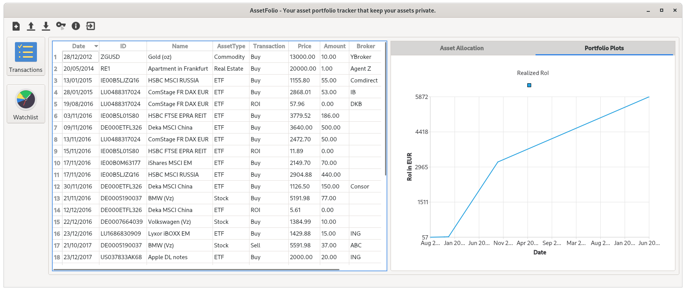

User Guide¶
This section provides the user guide how to use the software for managing your portfolio.
User Interface¶
The user interface of the application contains 4 parts:
- Toolbar buttons (top)
- Control button (left buttons)
- Table section (middle)
- Visualization section (right)

Transaction Data¶
If you never have a watchlist or a transaction list, you can just start a new empty sheet by choosing the new button on top left with the plus sign. Fill the sheet with your transactions history, and save it by clicking the save button (down arrow button). Choose your local currency or asset currency and save it as a JSON file (*.json).
If have already a watchlist or an Excel list of your investments you can export it to a JSON file. The JSON file has to have three members: "QueryType", "Currency", and "Transactions". In order to create your own compatible json file, you can load the test json file example.json for the symbol ticker or example_isin.json for ISIN.
Below is an example of a simple JSON file.
{
"Currency": "EUR",
"Transactions": [
{
"Date": "17.11.2016",
"ID": "IE00B0M63177",
"Name": "iShares MSCI Emerging Market",
"AssetType": "ETF",
"Type": "Buy",
"Transaction": 2149.7,
"Amount": 70,
"Broker": ""
}
]
}
Dataset Format¶
The application uses the JSON format for saving the transaction activity data. All the user data shall be located in the data folder. The user can see the example.json as the template. Three obligatory member names are Currency and Activities.
An ID can be an ISIN or a symbol ticker. The symbol has to be found in https://financialmodelingprep.com/api/v3/company/stock/list or FMPSymbolList.json.
The supported AssetType values are:
Stock
ETF
Bond
Real_Estate
Crypto
Commodity
Certificate
For Transaction, the possible values are Buy, Sell, ROI.
The Price and Amount values have to be a number (float).
API Key¶
An API key is required in order to update the price of the symbolic ticker assets, cryptocurrency and other commodities. The API key can be obtain fromhttps://financialmodelingprep.com or by contacting me to order the API key. After getting the API key, the user can insert the key by clicking the key toolbar button on the top.